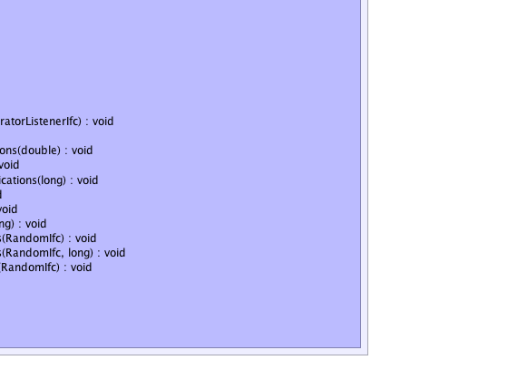

jsl.modeling.ModelElement
jsl.modeling.SchedulingElement
jsl.modeling.elements.EventGenerator
jsl.modeling.ModelElement
jsl.modeling.SchedulingElement
jsl.modeling.elements.EventGenerator
|
||||||||||
| PREV CLASS NEXT CLASS | FRAMES NO FRAMES | |||||||||
| SUMMARY: NESTED | FIELD | CONSTR | METHOD | DETAIL: FIELD | CONSTR | METHOD | |||||||||
java.lang.Object
public class EventGenerator
This class allows for the periodic generation of events similar to that achieved by "Create" modules in simulation languages. This class works in conjunction with the EventGeneratorListenerIfc which is used to listen and react to the events that are generated by this class. Classes can supply an instance of an EventGeneratorListenerIfc to provide the actions that take place when the event occurs. Alternatively, if no EventGeneratorListenerIfc is supplied, by default the generator(JSLEvent event) method of this class will be called when the event occurs. Thus, sub-classes can simply override this method to provide behavior for when the event occurs. If no EventGeneratorListenerIfc is supplied and the generate() method is not overridden, then the events will still occur; however, no meaningful actions will take place. Defaults: timeUntilFirst = Constant.ZERO timeUntilNext = Constant.POSITIVE_INFINITY timeUntilLast = Double.POSITIVE_INFINITY maxNum = Long.MAX_VALUE
|  |
| Nested Class Summary |
|---|
| Nested classes/interfaces inherited from class jsl.modeling.ModelElement |
|---|
ModelElement.TimedUpdateEventAction, ModelElement.WarmUpEventAction |
| Field Summary | |
|---|---|
static int |
EVENT_PRIORITY
|
private boolean |
myDoneFlag
Whether or not the generator is done generating |
private double |
myEndingTime
The time to stop generating for the current replication |
private long |
myEventCount
The number of events currently generated during the replication |
private int |
myEventPriority
Determines the priority of the event generator's events The default is DEFAULT_PRIORITY - 1 A lower number implies higher priority. |
private EventGeneratorListenerIfc |
myGenerateListener
Handles the actions for the event |
private double |
myInitialEndingTime
Used to set the ending time when the generator is initialized |
private long |
myInitialMaxNumEvents
Used to initialize the maximum number of events at the beginning of each replication |
private RandomIfc |
myInitialTimeBtwEvents
Holds the random source for the time between events. |
private RandomIfc |
myInitialTimeUntilFirstEvent
Holds the random source for the time until first event. |
private long |
myMaxNumEvents
The number of events to generate for the current replication |
private JSLEvent |
myNextEvent
The next event to be executed for the generator |
private boolean |
myStartOnInitFlag
This flag controls whether or not the generator starts automatically when initialized at the beginning of a replication By default this option is true. |
private boolean |
mySuspendedFlag
Whether or not the generator has been suspended |
private RandomVariable |
myTimeBtwEventsRV
A random variable for the time btw events |
private RandomVariable |
myTimeUntilFirstEventRV
A RandomVariable that uses the time until first random source |
| Constructor Summary | |
|---|---|
EventGenerator(ModelElement parent)
Creates an EventGenerator that uses the supplied EventGeneratorListenerIfc to react to the events. |
|
EventGenerator(ModelElement parent,
EventGeneratorListenerIfc listener)
Creates an EventGenerator that uses the supplied EventGeneratorListenerIfc to react to the events. |
|
EventGenerator(ModelElement parent,
EventGeneratorListenerIfc listener,
RandomIfc timeUntilFirst)
Creates an EventGenerator that uses the supplied EventGeneratorListenerIfc to react to the events. |
|
EventGenerator(ModelElement parent,
EventGeneratorListenerIfc listener,
RandomIfc timeUntilFirst,
RandomIfc timeUntilNext)
Creates an EventGenerator that uses the supplied EventGeneratorListenerIfc to react to the events. |
|
EventGenerator(ModelElement parent,
EventGeneratorListenerIfc listener,
RandomIfc timeUntilFirst,
RandomIfc timeUntilNext,
long maxNum)
Creates an EventGenerator that uses the supplied EventGeneratorListenerIfc to react to the events. |
|
EventGenerator(ModelElement parent,
EventGeneratorListenerIfc listener,
RandomIfc timeUntilFirst,
RandomIfc timeUntilNext,
long maxNum,
double timeUntilLast)
Creates an EventGenerator that uses the supplied EventGeneratorListenerIfc to react to the events. |
|
EventGenerator(ModelElement parent,
EventGeneratorListenerIfc listener,
RandomIfc timeUntilFirst,
RandomIfc timeUntilNext,
long maxNum,
double timeUntilLast,
java.lang.String name)
Creates an EventGenerator that uses the supplied EventGeneratorListenerIfc to react to the events. |
|
EventGenerator(ModelElement parent,
EventGeneratorListenerIfc listener,
RandomIfc timeUntilFirst,
RandomIfc timeUntilNext,
java.lang.String name)
Creates an EventGenerator that uses the supplied EventGeneratorListenerIfc to react to the events. |
|
EventGenerator(ModelElement parent,
EventGeneratorListenerIfc listener,
java.lang.String name)
Creates an EventGenerator that uses the supplied EventGeneratorListenerIfc to react to the events. |
|
EventGenerator(ModelElement parent,
RandomIfc timeUntilFirst)
Creates an EventGenerator that uses the supplied EventGeneratorListenerIfc to react to the events. |
|
EventGenerator(ModelElement parent,
RandomIfc timeUntilFirst,
RandomIfc timeUntilNext)
Creates an EventGenerator that uses the supplied EventGeneratorListenerIfc to react to the events. |
|
EventGenerator(ModelElement parent,
RandomIfc timeUntilFirst,
RandomIfc timeUntilNext,
java.lang.String name)
Creates an EventGenerator that uses the supplied EventGeneratorListenerIfc to react to the events. |
|
| Method Summary | |
|---|---|
protected void |
generate(JSLEvent event)
This method should be overridden by sub-classes that do not supply an EventGeneratorListenerIfc to model the action that occur when the event happens. |
double |
getEndingTime()
Gets the currently planned ending time of the generator. |
EventGeneratorListenerIfc |
getEventGeneratorListener()
Gets the listener for the events to the supplied EventGeneratorListenerIfc. |
int |
getEventPriority()
The priority of the events for the generator |
double |
getGenerationEndingTimeForReplications()
Returns the ending time that is to be used when the generator is initialized for each replication. |
long |
getMaximumNumberOfEvents()
Gets the maximum number of actions for the generator. |
long |
getMaximumNumberOfEventsForReplications()
Returns the maximum number of events that is used for initializing each replication |
long |
getNumberOfEventsGenerated()
Gets the number of events that have been generated by the generator |
boolean |
getStartOnInitializeFlag()
This flag indicates whether or not the generator will automatically start at the beginning of a replication when initialized. |
RandomIfc |
getTimeBetweenEvents()
Gets the random source controlling the time between events |
RandomIfc |
getTimeBetweenEventsForReplications()
Returns the time between events used to initialize each replication |
RandomIfc |
getTimeUntilFirstEventForReplications()
Gets the RandomIfc that will be used at the beginning of each replication to generate the time until the first event |
protected void |
handleEvent(JSLEvent event)
Specifies the action that occurs when the generate event listener is called. |
protected void |
incrementNumberOfEvents()
Increments the number of actions and checks if the number of actions is greater than the maximum number of actions. |
protected void |
initialize()
This method should be overridden by subclasses that need actions performed to initialize prior to a replication. |
boolean |
isGeneratorDone()
This method checks to see if the generator is done. |
boolean |
isSuspended()
Indicates whether or not the generator has been suspended |
protected void |
removedFromModel()
This method should be overridden by subclasses that need actions performed when a model element is removed from a model |
void |
resume()
Resume the generation of events according to the time between event distribution. |
protected void |
scheduleFirstEvent(double t)
Schedules the first event at current time + t |
protected void |
scheduleFirstEvent(RandomIfc r)
Schedules the first event at current time + r.getValue() |
void |
setEndingTime(double endingTime)
Sets the ending time for generating events for the current replication. |
void |
setEventGeneratorListener(EventGeneratorListenerIfc listener)
Sets the listener for the events to the supplied EventGeneratorListenerIfc |
void |
setEventPriority(int priority)
Lower means earlier (higher priority). |
void |
setGenerationEndingTimeForReplications(double endingTime)
This value is used to set the ending time for generating actions for each replication. |
void |
setMaximumNumberOfEvents(long maxNum)
Sets the maximum number of events for the generator. |
void |
setMaximumNumberOfEventsForReplications(long maxNumEvents)
Sets the the maximum number of events to be used to initialize each replication. |
void |
setStartOnInitializeFlag(boolean flag)
Sets the flag that indicates whether or not the generator will automatically start at the beginning of a replication when initialized |
void |
setTimeBetweenEvents(RandomIfc timeUntilNext)
Sets the time between event random source. |
void |
setTimeBetweenEvents(RandomIfc timeBtwEvents,
long maxNumEvents)
Sets the time between events and the maximum number of events for the generator. |
void |
setTimeBetweenEventsForReplications(RandomIfc timeBtwEvents)
Sets the time between events and the maximum number of events to be used to initialize each replication. |
void |
setTimeBetweenEventsForReplications(RandomIfc timeBtwEvents,
long maxNumEvents)
Sets the time between events and the maximum number of events to be used to initialize each replication. |
void |
setTimeUntilFirstEventForReplications(RandomIfc timeUntilFirst)
Sets the RandomIfc representing the time until the first event that is used at the beginning of each replication to generate the time until the first event. |
void |
suspend()
Suspends the generation of events and cancels the next scheduled event from the generator |
void |
turnOffGenerator()
This method turns the generator off, the next scheduled generation event will NOT occur, i.e. this method will also cancel a previously scheduled generation event if one exists. |
void |
turnOnGenerator()
If the generator was not started upon initialization at the beginning of a replication, then this method can be used to start the generator The generator will be started 0.0 time units after the call If this method is used when the generator is already started it does nothing. |
void |
turnOnGenerator(double t)
If the generator was not started upon initialization at the beginning of a replication, then this method can be used to start the generator The generator will be started t time units after the call If this method is used when the generator is already started it does nothing. |
void |
turnOnGenerator(RandomIfc r)
If the generator was not started upon initialization at the beginning of a replication, then this method can be used to start the generator The generator will be started r.getValue() time units after the call If this method is used when the generator is already started it does nothing. |
| Methods inherited from class java.lang.Object |
|---|
clone, equals, finalize, getClass, hashCode, notify, notifyAll, wait, wait, wait |
| Field Detail |
|---|
public static final int EVENT_PRIORITY
private int myEventPriority
private RandomIfc myInitialTimeUntilFirstEvent
private RandomVariable myTimeUntilFirstEventRV
private RandomIfc myInitialTimeBtwEvents
private RandomVariable myTimeBtwEventsRV
private double myInitialEndingTime
private double myEndingTime
private long myInitialMaxNumEvents
private long myMaxNumEvents
private long myEventCount
private boolean myDoneFlag
private boolean mySuspendedFlag
private JSLEvent myNextEvent
private EventGeneratorListenerIfc myGenerateListener
private boolean myStartOnInitFlag
| Constructor Detail |
|---|
public EventGenerator(ModelElement parent)
parent -
public EventGenerator(ModelElement parent,
EventGeneratorListenerIfc listener)
parent - listener - This listener supplies the "event" logic for reacting to the
generated event.
public EventGenerator(ModelElement parent,
EventGeneratorListenerIfc listener,
java.lang.String name)
parent - listener - This listener supplies the "event" logic for reacting to the
generated event.name - The name of the generator.
public EventGenerator(ModelElement parent,
EventGeneratorListenerIfc listener,
RandomIfc timeUntilFirst)
parent - listener - This listener supplies the "event" logic for reacting to the
generated event.timeUntilFirst - A DistributionIfc object that supplies the time until the first event
public EventGenerator(ModelElement parent,
EventGeneratorListenerIfc listener,
RandomIfc timeUntilFirst,
RandomIfc timeUntilNext)
parent - listener - This listener supplies the "event" logic for reacting to the
generated event.timeUntilFirst - A RandomIfc object that supplies the time until the first
event.timeUntilNext - A RandomIfc object that supplies the time between events.
Must not be a RandomIfc that always returns 0.0, if
the maximum number of generations is infinite (Long.MAX_VALUE)
public EventGenerator(ModelElement parent,
RandomIfc timeUntilFirst)
parent - timeUntilFirst - A RandomIfc object that supplies the time until the first
event.
public EventGenerator(ModelElement parent,
RandomIfc timeUntilFirst,
RandomIfc timeUntilNext)
parent - timeUntilFirst - A RandomIfc object that supplies the time until the first
event.timeUntilNext - A RandomIfc object that supplies the time between events.
Must not be a RandomIfc that always returns 0.0, if
the maximum number of generations is infinite (Long.MAX_VALUE)
public EventGenerator(ModelElement parent,
RandomIfc timeUntilFirst,
RandomIfc timeUntilNext,
java.lang.String name)
parent - timeUntilFirst - A RandomIfc object that supplies the time until the first
event.timeUntilNext - A RandomIfc object that supplies the time between events.
Must not be a RandomIfc that always returns 0.0, if
the maximum number of generations is infinite (Long.MAX_VALUE)name -
public EventGenerator(ModelElement parent,
EventGeneratorListenerIfc listener,
RandomIfc timeUntilFirst,
RandomIfc timeUntilNext,
java.lang.String name)
parent - listener - This listener supplies the "event" logic for reacting to the
generated event.timeUntilFirst - A RandomIfc object that supplies the time until the first
event.timeUntilNext - A RandomIfc object that supplies the time between events.
Must not be a RandomIfc that always returns 0.0, if
the maximum number of generations is infinite (Long.MAX_VALUE)name -
public EventGenerator(ModelElement parent,
EventGeneratorListenerIfc listener,
RandomIfc timeUntilFirst,
RandomIfc timeUntilNext,
long maxNum)
parent - listener - This listener supplies the "event" logic for reacting to the
generated event.timeUntilFirst - A RandomIfc object that supplies the time until the first
event.timeUntilNext - A RandomIfc object that supplies the time between events.
Must not be a RandomIfc that always returns 0.0, if
the maximum number of generations is infinite (Long.MAX_VALUE)maxNum - A long that supplies the maximum number of events
to generate. Each time an event is to be scheduled the maximum number of events
is checked. If the maximum has been reached, then the
generator is turned off. The default is Long.MAX_VALUE.
This parameter cannot be Long.MAX_VALUE when the time until
next always returns a value of 0.0
public EventGenerator(ModelElement parent,
EventGeneratorListenerIfc listener,
RandomIfc timeUntilFirst,
RandomIfc timeUntilNext,
long maxNum,
double timeUntilLast)
parent - listener - This listener supplies the "event" logic for reacting to the
generated event.timeUntilFirst - A RandomIfc object that supplies the time until the first
event.timeUntilNext - A RandomIfc object that supplies the time between events.
Must not be a RandomIfc that always returns 0.0, if
the maximum number of generations is infinite (Long.MAX_VALUE)maxNum - A long that supplies the maximum number of events
to generate. Each time an event is to be scheduled the maximum number of events
is checked. If the maximum has been reached, then the
generator is turned off. The default is Long.MAX_VALUE.
This parameter cannot be Long.MAX_VALUE when the time until
next always returns a value of 0.0timeUntilLast - A double that supplies a time to stop generating
events. When the generator is
created, this variable is used to set the ending time of the
generator. Each time an event is to be scheduled the ending
time is checked. If the time of the next event is past this
time, then the generator is turned off and the event won't be
scheduled. The default is Double.POSITIVE_INFINITY.
public EventGenerator(ModelElement parent,
EventGeneratorListenerIfc listener,
RandomIfc timeUntilFirst,
RandomIfc timeUntilNext,
long maxNum,
double timeUntilLast,
java.lang.String name)
parent - listener - This listener supplies the "event" logic for reacting to the
generated event.timeUntilFirst - A RandomIfc object that supplies the time until the first
event.timeUntilNext - A RandomIfc object that supplies the time between events.
Must not be a RandomIfc that always returns 0.0, if
the maximum number of generations is infinite (Long.MAX_VALUE)maxNum - A long that supplies the maximum number of events
to generate. Each time an event is to be scheduled the maximum number of events
is checked. If the maximum has been reached, then the
generator is turned off. The default is Long.MAX_VALUE.
This parameter cannot be Long.MAX_VALUE when the time until
next always returns a value of 0.0timeUntilLast - A double that supplies a time to stop generating
events. When the generator is
created, this variable is used to set the ending time of the
generator. Each time an event is to be scheduled the ending
time is checked. If the time of the next event is past this
time, then the generator is turned off and the event won't be
scheduled. The default is Double.POSITIVE_INFINITY.name - The name of the generator.| Method Detail |
|---|
public final int getEventPriority()
public final void setEventPriority(int priority)
priority - the priority to setpublic final void setEventGeneratorListener(EventGeneratorListenerIfc listener)
listener - This listener supplies the "event" logic for reacting to the
generated event.public final EventGeneratorListenerIfc getEventGeneratorListener()
public final boolean getStartOnInitializeFlag()
getStartOnInitializeFlag in interface EventGeneratorIfcpublic final void setStartOnInitializeFlag(boolean flag)
setStartOnInitializeFlag in interface EventGeneratorIfcflag - public final void turnOnGenerator(double t)
turnOnGenerator in interface EventGeneratorIfct - The time until the generator should be turned onpublic void turnOnGenerator(RandomIfc r)
turnOnGenerator in interface EventGeneratorIfcr - The time until the generator should be turned onpublic final void turnOnGenerator()
turnOnGenerator in interface EventGeneratorIfcpublic final void turnOffGenerator()
turnOffGenerator in interface EventGeneratorIfcpublic final void suspend()
suspend in interface EventGeneratorIfcpublic final boolean isSuspended()
isSuspended in interface EventGeneratorIfcpublic final void resume()
resume in interface EventGeneratorIfcpublic final boolean isGeneratorDone()
isGeneratorDone in interface EventGeneratorIfcpublic final long getMaximumNumberOfEvents()
getMaximumNumberOfEvents in interface EventGeneratorIfcpublic final RandomIfc getTimeBetweenEvents()
getTimeBetweenEvents in interface EventGeneratorIfcpublic final void setTimeBetweenEvents(RandomIfc timeUntilNext)
setTimeBetweenEvents in interface EventGeneratorIfctimeUntilNext - public final void setMaximumNumberOfEvents(long maxNum)
setMaximumNumberOfEvents in interface EventGeneratorIfcmaxNum -
public final void setTimeBetweenEvents(RandomIfc timeBtwEvents,
long maxNumEvents)
setTimeBetweenEvents in interface EventGeneratorIfctimeBtwEvents - maxNumEvents - public final void setTimeBetweenEventsForReplications(RandomIfc timeBtwEvents)
setTimeBetweenEventsForReplications in interface EventGeneratorIfctimeBtwEvents - public final void setMaximumNumberOfEventsForReplications(long maxNumEvents)
setMaximumNumberOfEventsForReplications in interface EventGeneratorIfcmaxNumEvents -
public final void setTimeBetweenEventsForReplications(RandomIfc timeBtwEvents,
long maxNumEvents)
setTimeBetweenEventsForReplications in interface EventGeneratorIfctimeBtwEvents - maxNumEvents - public final RandomIfc getTimeBetweenEventsForReplications()
getTimeBetweenEventsForReplications in interface EventGeneratorIfcpublic final long getMaximumNumberOfEventsForReplications()
getMaximumNumberOfEventsForReplications in interface EventGeneratorIfcpublic final void setTimeUntilFirstEventForReplications(RandomIfc timeUntilFirst)
setTimeUntilFirstEventForReplications in interface EventGeneratorIfctimeUntilFirst - The supplied RandomIfc, cannot be nullpublic final RandomIfc getTimeUntilFirstEventForReplications()
getTimeUntilFirstEventForReplications in interface EventGeneratorIfcpublic final void setEndingTime(double endingTime)
setEndingTime in interface EventGeneratorIfcendingTime - the desired time to stop generatingpublic final double getEndingTime()
getEndingTime in interface EventGeneratorIfcpublic final void setGenerationEndingTimeForReplications(double endingTime)
setGenerationEndingTimeForReplications in interface EventGeneratorIfcendingTime - public final double getGenerationEndingTimeForReplications()
getGenerationEndingTimeForReplications in interface EventGeneratorIfcpublic final long getNumberOfEventsGenerated()
getNumberOfEventsGenerated in interface EventGeneratorIfcprotected void initialize()
ModelElement
initialize in class ModelElementprotected void generate(JSLEvent event)
event - protected final void scheduleFirstEvent(RandomIfc r)
r - protected final void scheduleFirstEvent(double t)
t - protected final void incrementNumberOfEvents()
protected final void handleEvent(JSLEvent event)
handleEvent in class SchedulingElementevent - protected void removedFromModel()
ModelElement
removedFromModel in class ModelElement
|
||||||||||
| PREV CLASS NEXT CLASS | FRAMES NO FRAMES | |||||||||
| SUMMARY: NESTED | FIELD | CONSTR | METHOD | DETAIL: FIELD | CONSTR | METHOD | |||||||||